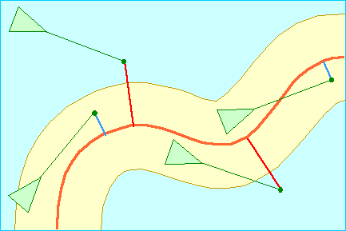

Master Thesis Reading List – 2 Steering Behavior For Autonomous Characters Author: Craig Reynolds (Paper Download)

Abstract: This paper presents solutions for one requirement of autonomous characters in animation and games: the ability to navigate around their world in a life-like and improvisational manner. These “steering behaviors” are largely independent of the particulars of the character’s means of locomotion. Combinations of steering behaviors can be used to achieve higher level goals (For example: get from here to there while avoiding obstacles, follow this corridor, join that group of characters…) This paper divides motion behavior into three levels. It will focus on the middle level of steering behaviors, briefly describe the lower level of locomotion, and touch lightly on the higher level of goal setting and strategy.